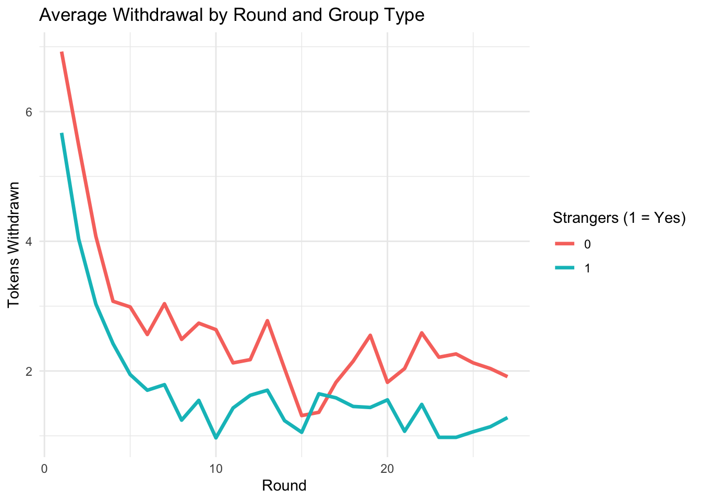
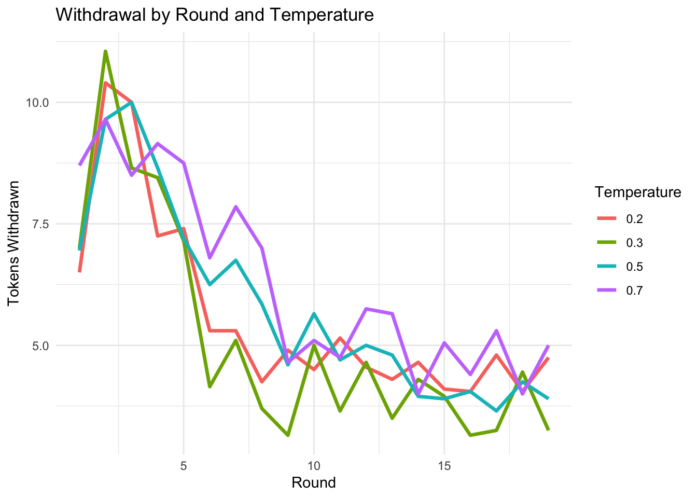
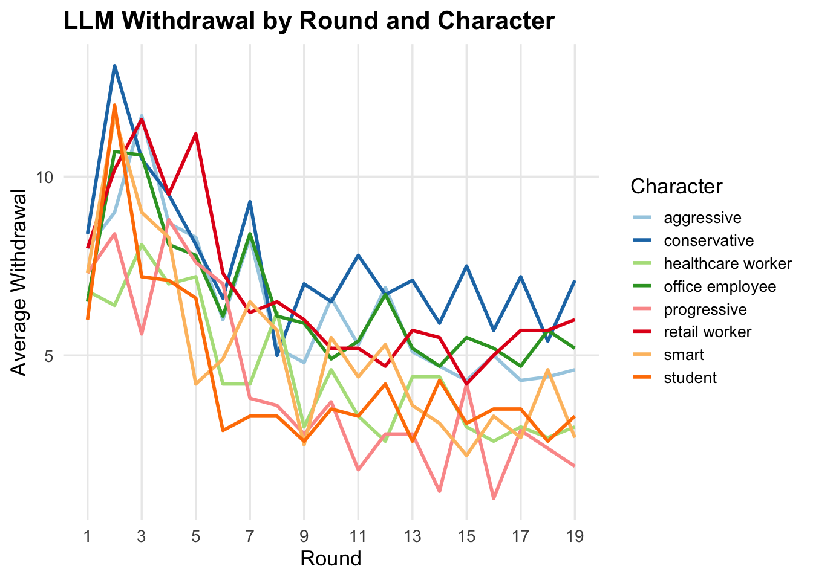

This document provides an analysis of data conducted from students and online workers. The participants were tasked with maintaining a general “natural” resource (tokens) across 20 repeated rounds.
Here we are loading in the data set and filtering across only the maintenance treatment. Meaning the participant were tasked with not letting the natural resource deplete, a typical tragedy of commons simulation.
# load tidyverselibrary(tidyverse)
── Attaching core tidyverse packages ──────────────────────── tidyverse 2.0.0 ──
✔ dplyr 1.1.4 ✔ readr 2.1.5
✔ forcats 1.0.0 ✔ stringr 1.5.1
✔ ggplot2 3.5.2 ✔ tibble 3.3.0
✔ lubridate 1.9.4 ✔ tidyr 1.3.1
✔ purrr 1.0.4
── Conflicts ────────────────────────────────────────── tidyverse_conflicts() ──
✖ dplyr::filter() masks stats::filter()
✖ dplyr::lag() masks stats::lag()
ℹ Use the conflicted package (<http://conflicted.r-lib.org/>) to force all conflicts to become errors
library(haven)# tells R to skip the first two rows of dataset and start on the third onetofc <-read_dta("GKQ_Dataset.dta")head(tofc)
In this next section we will identify what percent of the participants cooperated across rounds versus defected. It will allow for us to understand if the subjects were considerate of other people and the resource as a whole or if they were selfish.
# Compute mean withdrawal per participanttofc_maint_summary <- tofc_maint |>group_by(id, strangers) |>summarise(mean_withdrawal =mean(c), .groups ="drop")head(tofc_maint_summary)
Table explains what the binary variable for strangers means. 1 means that every round groups were reshuffled therefore they were always with strangers. 0 means that the groups stayed fixed for all 20 rounds.
Do participants claim more tokens when they are in a group with people they know or strangers? This chunk of code will help us compare the withdraws. Like comparing cooperation rate in Prisoners Dilemma simulation.
304 participants in fixed group and 128 participants in shuffled. Participants in strangers = 1, meaning they were reshuffled each round (more like a one-shot game) withdrew and average of 1.74 tokens per round, whereas participants in mixed groups, meaning they were in shuffled groups withdrew only. The standard deviation is ~4.41, deviating from the ~1.74 amount. For the participants in fixed groups, same groups across 20 rounds (strangers = 0), the mean withdrawal per round was ~6.787 and the standard deviation was ~7.6
We will run a t-test to ensure our results are statistically significant. The t-test compares the means of the two groups and tests.
H₀ (Null): The true mean withdrawal is the same for strangers and partners
H₁ (Alternative): The true mean withdrawal differs between the two
Equivalent to t-test ran in PD simulation.
# T-test comparing average withdrawals between strangers and partnerst.test(c ~ strangers, data = tofc_maint)
Welch Two Sample t-test
data: c by strangers
t = 6.6562, df = 4024.5, p-value = 3.188e-11
alternative hypothesis: true difference in means between group 0 and group 1 is not equal to 0
95 percent confidence interval:
0.6333994 1.1623182
sample estimates:
mean in group 0 mean in group 1
2.641204 1.743345
Our t-statistic is quite large at 37.279, meaning that our results are far from what we may expect by chance. Since our p-value is < 0.0001, our result is statistically significant. We’re 95% confident the true mean difference lies between 4.78 and 5.31 tokens per round. Because this interval does NOT include 0, the difference is significant.
Now, we are running a linear regression on the participant level to identify the effect of the group type, which in this case is strangers.
# Linear regression predicting withdrawals based on group typemodel1 <-lm(c ~ strangers, data = tofc_maint)summary(model1)
Call:
lm(formula = c ~ strangers, data = tofc_maint)
Residuals:
Min 1Q Median 3Q Max
-2.6412 -2.6412 -1.7433 -0.7433 18.2567
Coefficients:
Estimate Std. Error t value Pr(>|t|)
(Intercept) 2.6412 0.1019 25.925 < 2e-16 ***
strangers -0.8979 0.1299 -6.914 5.25e-12 ***
---
Signif. codes: 0 '***' 0.001 '**' 0.01 '*' 0.05 '.' 0.1 ' ' 1
Residual standard error: 4.735 on 5614 degrees of freedom
Multiple R-squared: 0.008442, Adjusted R-squared: 0.008266
F-statistic: 47.8 on 1 and 5614 DF, p-value: 5.251e-12
The results of the linear regression show us strangers drew 5.044 fewer tokens per round than partners and that is statistically significant because p<0.001.
Since we have all 20 rounds of data, we can check if the token withdraws differ across rounds. Is this trend different for strangers and partners?
library(lme4)
Loading required package: Matrix
Attaching package: 'Matrix'
The following objects are masked from 'package:tidyr':
expand, pack, unpack
# Mixed-effects model: withdrawal ~ group type * roundmodel2 <-lmer(c ~ period * strangers + (1| id), data = tofc_maint)summary(model2)
Linear mixed model fit by REML ['lmerMod']
Formula: c ~ period * strangers + (1 | id)
Data: tofc_maint
REML criterion at convergence: 30447.8
Scaled residuals:
Min 1Q Median 3Q Max
-3.5437 -0.3855 -0.1359 0.1342 5.6875
Random effects:
Groups Name Variance Std.Dev.
id (Intercept) 10.28 3.206
Residual 11.74 3.426
Number of obs: 5616, groups: id, 208
Fixed effects:
Estimate Std. Error t value
(Intercept) 4.013960 0.389243 10.312
period -0.098054 0.009465 -10.360
strangers -1.071964 0.496189 -2.160
period:strangers 0.012436 0.012065 1.031
Correlation of Fixed Effects:
(Intr) period strngr
period -0.340
strangers -0.784 0.267
prd:strngrs 0.267 -0.784 -0.340
# c = number of tokens per round# strangers, 1 if reshuffled, 0 if fixed group# period = round number# period:strangers = interaction betwen both, does time trend differ for strangers?# Random effects: (1 | id) = each participant has their own baseline withdrawal level.
Our interpretation… intercept (6.393), in round one, participants in fixed groups (partners) withdrew ~6.39 tokens on average. Period, on average, for the fixed groups, withdrawal increased very slightly at ~0.01 tokens per round. Strangers, in round 1, participants withdrew ~3.45 less tokens than the fixed group. Period:strangers, as the rounds went on, they decreased their withdrawal by ~0.096 tokens, a higher rate than the partners group.
Randomness effect… id (intercept) our variance is 29.54 and our standard deviation is 5.435, showing us there is xubstantial variability in baseline withdrawal between participants. The residual variance is 12.78 and standard deviation is 3.575 meaning there is additional variability within participants across rounds. This means individuals differ quite a lot in their baseline withdrawal tendencies.
To help understand this better we will create a visual of average withdrawals per round.
library(ggplot2)library(tidyverse)tofc_maint |>group_by(period, strangers) |>summarise(mean_withdrawal =mean(c), .groups ="drop") |>ggplot(aes(x = period, y = mean_withdrawal, color =factor(strangers))) +geom_line(size =1.2) +labs(title ="Average Withdrawal by Round and Group Type",x ="Round", y ="Tokens Withdrawn", color ="Strangers (1 = Yes)") +theme_minimal()
Warning: Using `size` aesthetic for lines was deprecated in ggplot2 3.4.0.
ℹ Please use `linewidth` instead.

This graph clearly shows us that participants in the strangers group (0), meaning that groups stay fixed for all 20 rounds started at a high baseline of token withdrawal and very slightly decreased per round until they got to the last few rounds they increased again. For stranger group (1), meaning participants were shuffled each round, they start at a much lower baseline for token withdrawal and they more rapidly decrease across rounds until they sort of plateau at round.
LLM Data Analysis
The LLM data analysis was conducted in Python with four LLMs completing this simulation across twenty rounds with the goal of not depleting their resource, which in this case was one hundred tokens. You can check out the code in this GitHub Repo. For this simulation I made a strangers prompt, and a partners prompt. For the strangers prompt the LLMs were told they are competing againts different participants each round. For the partners prompt they were told they are participating against they same people the entire time.
The four LLMs were run on several characteristics and temperatures to adjust for how sensitive they are to these instructions. I characterized them as smart, progressive, aggressive and conservative. I collected seperate data based on occupations such as retail worker, office employee, student and heathcare worker.
# Load necessary librarieslibrary(tidyverse)library(lme4)library(ggplot2)# Load the LLM datasetllm_data <-read_csv("TofC Dataset.csv")
Rows: 80 Columns: 26
── Column specification ────────────────────────────────────────────────────────
Delimiter: ","
chr (1): char
dbl (25): subject_id, group_id, cpp, experiment, cc1, cc2, cc3, cc4, cc5, cc...
ℹ Use `spec()` to retrieve the full column specification for this data.
ℹ Specify the column types or set `show_col_types = FALSE` to quiet this message.
From this output, we see an opposite response from what we saw from the human case. The LLMs that believed they were working with strangers for all 20 rounds had a higher average of mean withdrawal. Logically, this makes sense, if you know that you are not going to see people again, you have a higher probability to screw them over? Nevertheless, mean withdrawal was only about 0.7 tokens more per round. Another aspect to note is that the mean withdrawals per round are significantly higher compared to humans. This brings us right to the main question, can LLMs exhibit human emotions and empathy. This data may show us otherwise because the LLMs were selfish in taking more tokens and allowing for the resource to deplete early on.
The depletion rate for partners (3) was higher than the depletion rate for the strangers group. The LLMs that were told they are in groups with partners managed to hold onto their tokens for longer.
Linear mixed model fit by REML ['lmerMod']
Formula: withdrawal ~ round * experiment * temp + (1 | subject_id)
Data: llm_long
REML criterion at convergence: 8184.3
Scaled residuals:
Min 1Q Median 3Q Max
-2.4452 -0.6488 -0.1383 0.4831 5.1018
Random effects:
Groups Name Variance Std.Dev.
subject_id (Intercept) 3.305 1.818
Residual 11.543 3.397
Number of obs: 1520, groups: subject_id, 80
Fixed effects:
Estimate Std. Error t value
(Intercept) 9.45549 3.37364 2.803
round -0.53000 0.19702 -2.690
experiment -0.76230 1.32325 -0.576
temp 8.21826 7.23384 1.136
round:experiment 0.10692 0.07728 1.384
round:temp -0.01228 0.42246 -0.029
experiment:temp -2.29408 2.83734 -0.809
round:experiment:temp -0.02081 0.16570 -0.126
Correlation of Fixed Effects:
(Intr) round exprmn temp rnd:xp rnd:tm exprm:
round -0.584
experiment -0.981 0.573
temp -0.911 0.532 0.894
rond:xprmnt 0.573 -0.981 -0.584 -0.522
round:temp 0.532 -0.911 -0.522 -0.584 0.894
exprmnt:tmp 0.894 -0.522 -0.911 -0.981 0.532 0.573
rnd:xprmnt: -0.522 0.894 0.532 0.573 -0.911 -0.981 -0.584
Here we are predicting withdrawal amounts based on round, experiment and LLM temperature. Withdrawals decrease by ~0.53 per round. Partners withdraw less than strangers by ~0.76 tokens. Higher temp LLMs tend to withdraw more, but large error bar therefore this statistic is not significant. In the partner condition the decline over rounds is slower. Temperature does not meaningfully interact with time. There is a slight decrease in withdrawals for partners at high temp but this statistic is not significant.
With all this said, LLMs reduce their withdrawals over rounds regardless of group type or temperatire. There is no strong evidence that group structure (strangers vs partners) affects overall withdrawals. There is also no strong evidence that temperature changes how LLMs adapt over time. There is large individual variation.
llm_long |>group_by(round, temp) |>summarise(mean_withdrawal =mean(withdrawal, na.rm =TRUE), .groups ="drop") |>ggplot(aes(x = round, y = mean_withdrawal, color =factor(temp))) +geom_line(size =1.2) +labs(title ="Withdrawal by Round and Temperature",x ="Round", y ="Tokens Withdrawn", color ="Temperature") +theme_minimal()

We see a similar trajectory across LLM temperatures.
library(ggplot2)library(RColorBrewer)llm_long |>group_by(char, round) |>summarise(mean_withdrawal =mean(withdrawal, na.rm =TRUE), .groups ="drop") |>ggplot(aes(x = round, y = mean_withdrawal, color = char)) +geom_line(size =1) +# thinner linesscale_color_brewer(palette ="Paired") +# cleaner color setlabs(title ="LLM Withdrawal by Round and Character",x ="Round", y ="Average Withdrawal", color ="Character" ) +theme_minimal(base_size =13) +theme(legend.position ="right",legend.key.size =unit(0.5, "cm"),legend.text =element_text(size =10),plot.title =element_text(face ="bold"),panel.grid.minor =element_blank() ) +scale_x_continuous(breaks =seq(1, max(llm_long$round), by =2)) # reduce x-axis labels

There is no significant outliers for the characteristics again showing us that LLMs do not have the capabilities to perform like human beings yet. The aggressive LLM which we would expect to take the most tokens lies dead in the middle of all of the other characteristics.